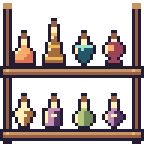
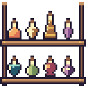
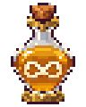
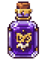
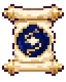
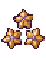
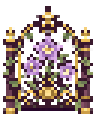

새 원정 지역 「새벽 등대」 · 새 물약 4종 아트 후보 v1
2026-11-05 · 상태 후보(candidate) · 게임 미연결 · 승인 전. 기획은 docs/새-원정-지역과-물약-F26-기획안.md.
source/*.txt)를 고정 후처리 tools/process_pixel_art.py에 통과시킨 결과다.
승인된 24색·물체당 5색 이하·1픽셀 외곽선·반투명 0·공통 3배. 체크무늬는 CSS 배경이며 그림에 구워 넣지 않았다.1. 새 물약 4종 · 병 / 솥 / 아이콘 / 레시피
해돋이 물약 · 활력 계열 · 여행자 선호
병 평평한 수평선 바닥 위의 둥근 돔(떠오르는 해). 바닥 행이 병 폭 전체인 유일한 8×12 병.
아이콘 같은 돔 병을 32×40으로 다시 그림. 산호색 반원 해와 빛살, 수평선.
레시피 두루마리 원형 인장 안에 귤빛 해와 빛살, 크림 수평선.
가장 가까운 기존 액체: fortune #E9B95F (ΔE 13.7) · 솥 몸체 #86548E와 ΔE 77.1 · 같은 병 색 조합을 쓰는 기존 물약 0종 · 같은 실루엣 기존 병 0종 · 검사 통과
등대불 물약 · 기교 계열 · 고양이 도적 선호
병 4→6→8칸으로 넓어지는 등대 탑 모양 긴 병. 꼭대기 버터색 등불, 탑에 버터색 띠 2줄.
아이콘 코르크색 뾰족 지붕(마개)·등불 방·버터색 띠 3줄의 등대 탑.
레시피 호박색 인장 안에 작은 등대(등불·띠).
가장 가까운 기존 액체: vigor #DE7356 (ΔE 22.5) · 솥 몸체 #86548E와 ΔE 59.9 · 같은 병 색 조합을 쓰는 기존 물약 1종 · 같은 실루엣 기존 병 0종 · 검사 통과
물보라 물약 · 자연 계열 · 엘프 선호

병 어깨가 넓고 아래로 뾰족해지는 거꾸로 된 물방울. 윗줄 전체가 민트 물거품, 몸통은 깊은 청록.
아이콘 같은 거꾸로 물방울 병, 위쪽 물거품 띠와 크림색 소용돌이 파도 문양.
레시피 깊은 청록 인장 안에 민트 소용돌이 파도와 크림 물마루.
가장 가까운 기존 액체: ward #827589 (ΔE 26.4) · 솥 몸체 #86548E와 ΔE 42.5 · 같은 병 색 조합을 쓰는 기존 물약 4종 · 같은 실루엣 기존 병 0종 · 검사 통과
일월의 물약 · 비술 계열 · 여마법사 선호

병 짧은 목·둥근 몸통·가는 대·받침이 있는 잔 모양 병. 진홍 액체 안 왼쪽 위 귤빛 해 2×2.
아이콘 받침 달린 둥근 구슬 병. 진홍 액체 안에 귤빛 해와 크림색 초승달.
레시피 진홍 인장 안에 귤빛 해와 크림 초승달.
가장 가까운 기존 액체: moon #C38EB5 (ΔE 33.0) · 솥 몸체 #86548E와 ΔE 30.9 · 같은 병 색 조합을 쓰는 기존 물약 0종 · 같은 실루엣 기존 병 0종 · 검사 통과
2. 기존 36종 진열 병과 나란히 (★ 새 병, 모두 ×3)


3. 승인 선반(v4 48×48)에 올린 모습 ×3


4. 재료·지역 아이콘
여명초 (재료)
여섯 꽃잎의 귤빛 꽃(오른쪽 아래 꽃잎은 산호 그늘), 크림색 꽃심, 줄기와 세이지 잎 2장. 기존 재료 아이콘과 같은 32×40.
검사 통과
새벽 등대 (지역)
돌 절벽 위 흰 등대(산호 띠 2줄·지붕, 귤빛 등불)와 뒤로 떠오르는 해. 기존 지역 아이콘과 같은 32×40.
검사 통과
5. 32×40 아이콘 형식 비교
기존 32×40 아이콘(assets/content_expansion_v1, assets/rare_recipes_v1)은 승인 24색 규칙 이전의 생성 그림이라 수백 색을 쓴다.
새 후보는 크기·투명 배경·용도는 같게 맞추되 현재 AGENTS 규칙(24색·5색)으로 그렸다. 관리 화면에서 섞였을 때의 질감 차이는 결정 필요 항목이다.

510색

549색
396색

501색

497색

563색
6. 색 거리 (CIE76 ΔE)
| 물약 | 솥 액체 | 솥 색과의 거리 | 가장 가까운 기존 액체 | 새 4종끼리 |
|---|---|---|---|---|
| 해돋이 물약 | #F4AC68 | #241C32 86.9, #827589 60.5, #86548E 77.1, #E9B95F 13.7 | fortune (13.7) | beacon 27.7, sea_spray 80.0, sun_moon_elixir 56.3 |
| 등대불 물약 | #A56A3D | #241C32 61.8, #827589 44.8, #86548E 59.9, #E9B95F 34.3 | vigor (22.5) | sunrise 27.7, sea_spray 61.0, sun_moon_elixir 36.6 |
| 물보라 물약 | #24566A | #241C32 29.7, #827589 26.4, #86548E 42.5, #E9B95F 82.6 | ward (26.4) | sunrise 80.0, beacon 61.0, sun_moon_elixir 54.8 |
| 일월의 물약 | #9D4359 | #241C32 45.7, #827589 35.5, #86548E 30.9, #E9B95F 66.9 | moon (33.0) | sunrise 56.3, beacon 36.6, sea_spray 54.8 |
해돋이 #F4AC68는 행운 #E9B95F와 ΔE 13.7로 가장 가깝다(귤빛 대 버터 금빛). 병 모양(평평한 돔 대 둥근 병)으로 구분한다. 더 떨어뜨리려면 결정 필요 목록의 대안을 쓴다.
7. 결정 필요
- 이름: 지역 「새벽 등대」, 재료 「여명초」, 물약 해돋이·등대불·물보라·일월의 물약.
- 병 모양 4종과 액체색 4종(특히 해돋이와 행운의 가까운 색).
- 32×40 아이콘을 새 규칙(24색)으로 둘지, 기존 생성 아이콘 질감에 맞춘 별도 생성을 할지.
- 재배 화분 성장 그림(64×80)과 원정 카드용 큰 그림은 이번 범위 밖(승인 후 제작).
검사 결과: validation.json · 후처리 원본 보고: pipeline/validation.json · 승인 상태: approval.json